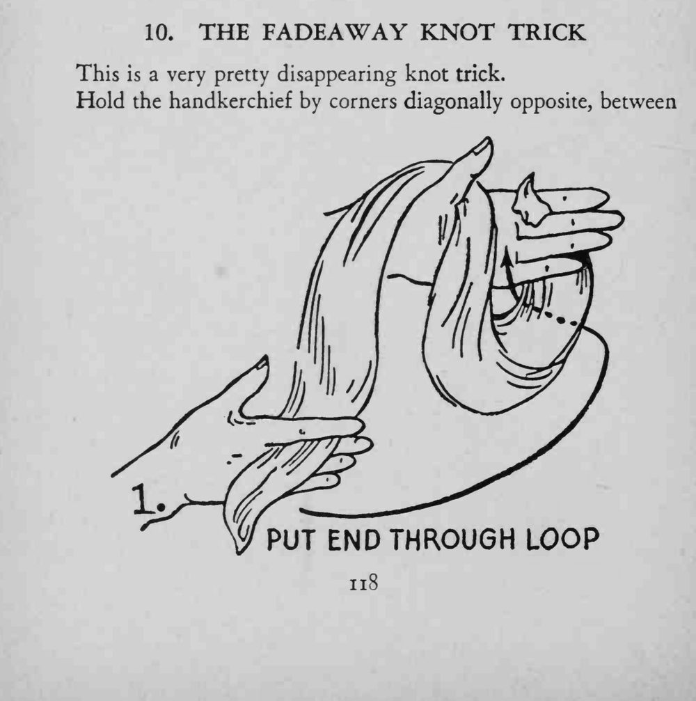
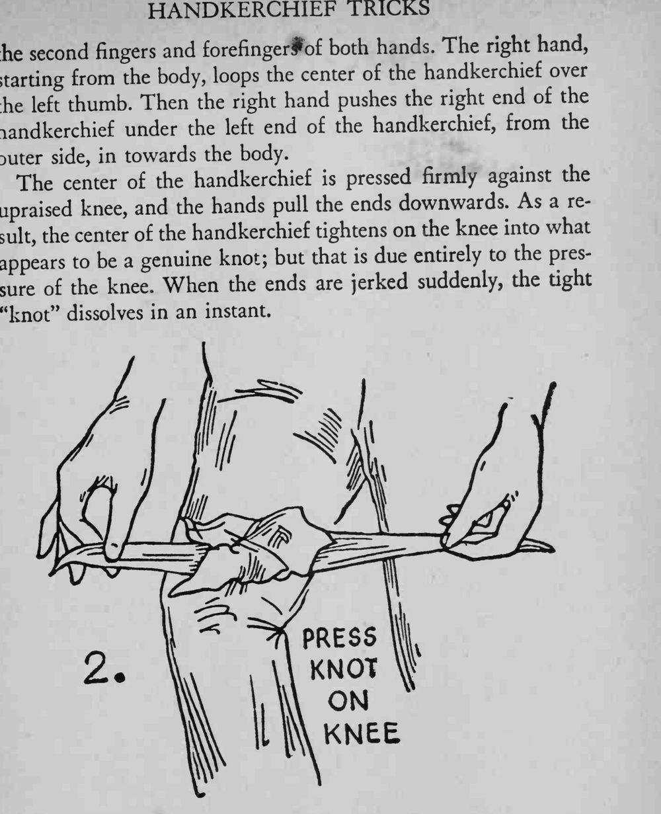

手帕在膝盖上被勒出一个看似结实的结，两手猛地一拉两端，结却瞬间散开消失。
结的假象全靠膝盖顶住的压力，拉之前别松开膝盖。


This is a very pretty disappearing knot trick. Hold the handkerchief by corners diagonally opposite, between the second fingers and forefingerf of both hands. The right hand, starting from the body, loops the center of the handkerchief over the thumb. Then the right hand pushes the right end of the left handkerchief under the left end of the handkerchief, from the outer side, in towards the body. The center of the handkerchief is pressed firmly against the upraised knee, and the hands pull the ends downwards. As a rethe center of the handkerchief tightens on the knee into what sult, appears to be a genuine knot; but that is due entirely to the pressure of the knee. When the ends are jerked suddenly, the tight "knot" dissolves in an instant.